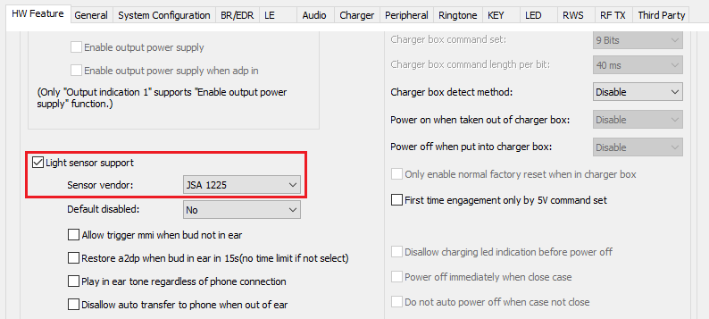
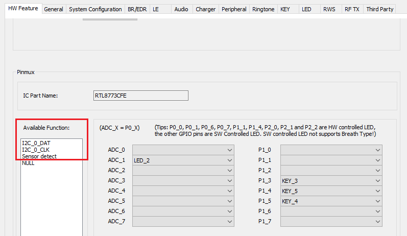
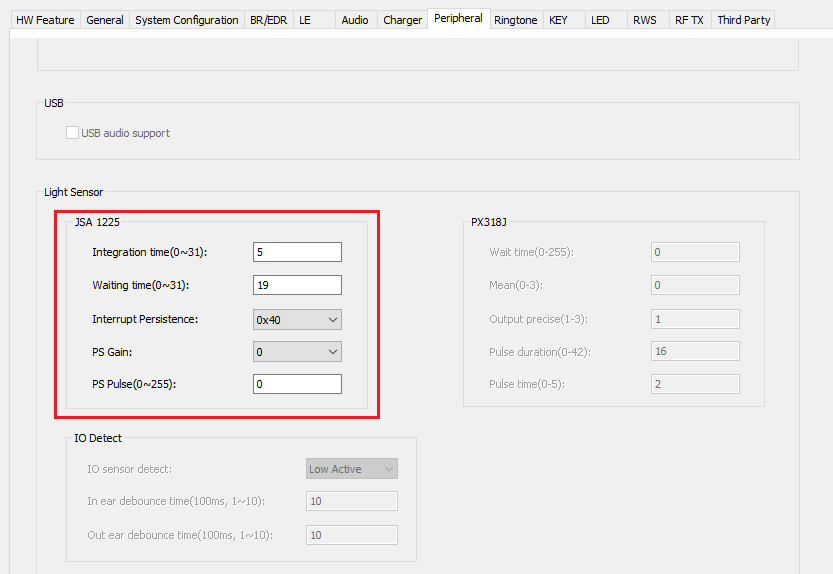

APP SENSOR JSA Module Application Note
V1.2
2023/07/26
Revision History
| Version | Date | Description |
| V1.0.0.0 | 2021/10/21 | Stable Release |
| V1.1 | 2023/07/12 | Optimize content |
| V1.2 | 2023/07/26 | Update doc format |
Contents
Table List
Figure List
Glossary
| Terms | Definitions |
| LD | Light Detect |
1 Introduction
The purpose of this document is to give an overview of the app sensor JSA module for customer. The document describes how to use app sensor JSA module in app project. The source code consists of APP_SENSOR_JSA part. The details will be described in the following sections.
2 McuConfigTool Configuration
Light sensor JSA1225/JSA1227 can be enabled in "HW Feature" page.

Figure 2-1 JSA Enable
Select i2c and Sensor detect pin.

Figure 2-2 JSA Pin Setting
Below is light sensor JSA1225 parameter's default value.

Figure 2-3 JSA Default Setting
3 Source Code Overview
This section describes app sensor jsa1225/jsa1227 module. The reference file is shown as follows:
- Project source code directory: sdk\src\mcu\sensor\ld_sensor\jsa\sensor_jsa.c This module is used to handle app sensor jsa1225/jsa1227 message.
3.1 Initialize sensor jsa1225/jsa1227 settings
source code directory: sdk/src/mcu/sensor/ld_sensor/jsa/sensor_jsa.c
Configure i2c and ready pinmux settings.
void sensor_jsa_init(T_JSA_DEV *dev)
{
memcpy((uint8_t *)&jsa_dev, (uint8_t *)dev, sizeof(jsa_dev));
sensor_int_init(jsa_dev.int_pinmux, jsa_dev.pull_value, true, jsa_dev.gpio_cb);
sensor_i2c_init(JSA_I2C_ID, JSA_I2C_ADDR, JSA_I2C_LOCK,
(jsa_dev.type == JSA_1225) ? JSA_1225_I2C_SPEED : JSA_1227_I2C_SPEED);
sensor_jsa_setup();
}
3.2 Get sensor jsa1225/jsa1227 in/out ear status
source code directory: sdk/src/mcu/sensor/ld_sensor/jsa/sensor_jsa.c
Get in-ear or out-ear status from jsa1225/jsa1227 sensor register.
uint8_t sensor_jsa_get_status(void)
{
return sensor_i2c_read_one_byte(JSA_I2C_ID, JSA_I2C_ADDR, SENSOR_REG_JSA_INT_FLAG);
}
3.3 Handle jsa1225/jsa1227 interrupt
source code directory: sdk/src/sample/rws/app_sensor_ld.c
Get jsa1225/jsa1227 in/out ear status and send io msg when interrupt is triggered.
{
...
uint8_t val = sensor_jsa_get_status();
...
}
3.4 Handle jsa1225/jsa1227 io msg
source code directory: sdk/src/sample/rws/app_io_msg.c
Handle io msg which is sent from jsa1225/jsa1227 interrupt handler.
{
...
switch (msgtype)
{
...
{
app_sensor_ld_handle_msg(&io_driver_msg_recv);
}
break;
}
...
}
source code directory: sdk/src/sample/rws/app_sensor_ld.c
Handle msg which is sent from io msg, start a debounce timer to prevent noise. The default debounce time is 500(ms).
void app_sensor_ld_handle_msg(
T_IO_MSG *io_driver_msg_recv)
{
...
uint8_t status = io_driver_msg_recv->
u.
param;
app_sensor_ld_start_debounce_timer(500, status);
}
3.5 Handle jsa1225/jsa1227 debounce result
source code directory: sdk/src/sample/rws/app_sensor_ld.c
Handle debounce result and send io msg.
static void app_sensor_ld_timeout_cb(uint8_t timer_evt, uint16_t param)
{
...
case APP_TIMER_LD_DEBOUNCE:
{
app_sensor_ld_stop_debounce_timer();
app_sensor_ld_debounce_handle(param);
}
break;
...
}
static void app_sensor_ld_debounce_handle(uint8_t status)
{
...
...
app_sensor_ld_msg_send(status, CAUSE_ACTION_SENSOR_LD);
...
}
static void app_sensor_ld_msg_send(uint8_t status, uint8_t cause)
{
switch (status)
{
adp_msg.
u.
param = ((cause << 8) | EVENT_IN_EAR);
break;
adp_msg.
u.
param = ((cause << 8) | EVENT_OUT_EAR);
break;
}
}
3.6 Handle jsa1225/jsa1227 in/out ear event
source code directory: sdk/src/sample/rws/app_io_msg.c
Handle io msg which is sent from jsa1225/jsa1227 debounce handler and handle the in/out ear event.
{
...
switch (msgtype)
{
...
{
T_BUD_LOCATION_EVENT evt = (T_BUD_LOCATION_EVENT)(io_driver_msg_recv.
u.
param & 0x00FF);
T_BUD_LOCATION_CAUSE_ACTION cause_action =
(T_BUD_LOCATION_CAUSE_ACTION)((io_driver_msg_recv.
u.
param & 0xFF00) >> 8);
app_loc_mgr_state_machine(evt, 0, cause_action);
}
break;
}
...
}